1.1: ParametrizationsExample 1.1.1: Lines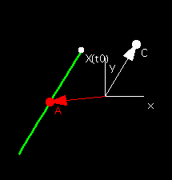
Example 1.1.2: Circles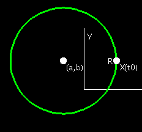
Definition 1.1.3: Length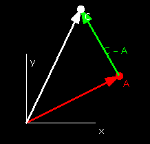
Example 1.1.9: Graphs of Functions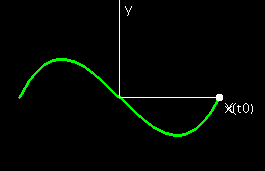
Example 1.1.10: Circles Revisited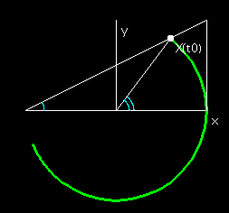
Examples 1.1.11, 1.1.12, 1.1.14, 1.1.15, and 1.1.16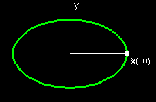
Example 1.1.13: Cycloids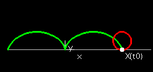
Problem 1.1.1: Distance from a Point to a LineProblem 1.1.4Problem 1.1.5: Distance from a Point to a CurveProblem 1.1.6: EpicycloidProblem 1.1.7: Hypocycloid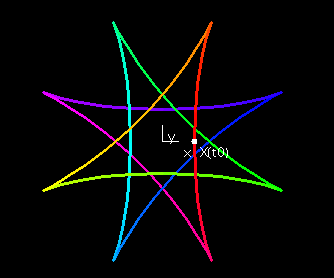
1.2: Position, Velocity, and AccelerationDefinition of Velocity Vector, p.14Example 1.2.4Example 1.2.5
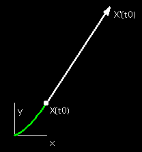
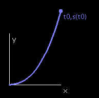
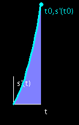
Definition 1.2.7: Unit Tangent Vector
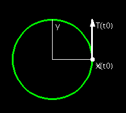
Example 1.2.10
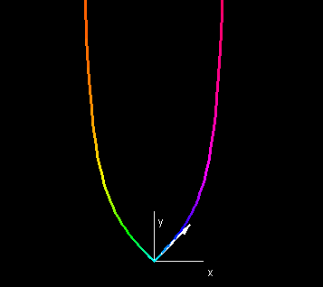
1.3: CurvatureDefinition 1.3.1: Unit Normal VectorDefinition 1.3.2: CurvatureExample 1.3.3Problem 1.3.16: Parallel CurveProblem 1.3.19: Pedal Curves1.4 Osculating Circles, Evolutes, and InvolutesDefinition 1.4.3: Osculating Circle and Definition 1.4.6: Evolute CurveDefinition 1.4.9: Involute Curve1.5: Natural EquationsTheorem 1.5.2: Fundamental Theorem of Plane Curvesp.44, Taylor Series of Curves |